This is my favorite part of the portfolio!
Here you will find all my personal projects and the ones I like the most and I had more fun doing them. Feel free to explore and look at them [you may even try one or two c:].
.png)
Personal Projects
Project Tortas:
This is the current project I'm working in my free time and it is a 2D platform fighting game!
My aim with this project is to have a single fighter, a single scenario and beeing able to play online using rollback netcode.
This project is in bare bones because I'm doing everything from scratch so right now is only a half engine.
- Actions Based Input system
- Event system to comunicate between systems
- File System Basics [Exists, Open, Read]
- GLFW for window management and raw Input
- OpenGL for rendering
- ResourceManager with system refference counting [Can load Textures and Shaders]
- STB Image Loading
- Scene Manager [Only 1 scene right now]
- Entity Component System
- Component Transform to move entities around
- Component SpriteRenderer to render entities
- Scene Serialization
- GGPO integration for rollback netcode
- Supporting more than 1 scene

Engines:
Fiesta Engine
Fiesta Engine is an engine made entirely in C++ by educational purpose as a university subject. The project has been developed by two students of videogames development during a period of four months.
This engine tries to be a basic Unity like engine with one high level system, so Fiesta Engine have a solid but simple base that let you execute the basic interactions to generate your game!
- C# Scripting system embedded
- 3D Rendering with OpenGL Direct Mode
- Assimp Mesh and Material Loading
- Devil Image Loading
- JSON Serialization for Scenes
- Binary Serialization for Meshes
- Basic Launcher
- Different Frame Buffer Objects for "editor camera" and "in-game camera" display
- Adaptative Octree
- Mouse Picking and Gizmos
- Basic Primitives
- Script Compiling Dll and Script Editor
- Resource Manager
From early on the project I was more interested in graphics and my partner in systems. You can see this reflected in the different jobs we made during the whole development of the engine I worked doing:
- Everything involving Transforms: The maths, The inheritance between GameObjects, the drawing calls... .
- The Camera: Both InGame and InEditor and the multiple Framebuffer objects for each camera perspective, also the movement of the editor camera .
- Mouse Picking: Allows the user select gameobjects from the scene window. It has some optimizations like checking if the raycast collides first with the bounding box and then checks if it has collide the object.
- Docking and Gizmos: I worked integrating the docking system and the gizmos.
- File System: The file system manages all the folders and files paths that allows other systems access to resources
- C# Embedding: We embedded the Mono C# scripting API into the engine to create a system Unity like. It provides the basic functionality to compile and execute code from c# scripts, set and get fields and attach c# methods to c++ ones
Github
Fiesta Engine Website
Direct X Engine
This 3D engine is a geometry viewer. The purpose of this graphic engine is to learn how Direct3D works and apply previous knowledge I have from OpenGL into this framework.
- Deferred Render Pipeline
- Directional Lights
- Point Lights
- Grid Shader
- Assimp Mesh and Matrial Loading
- STB Image Loading
- Material editor to Create and Modify materials
- Presets to easy material asignment
G Buffer Textures:
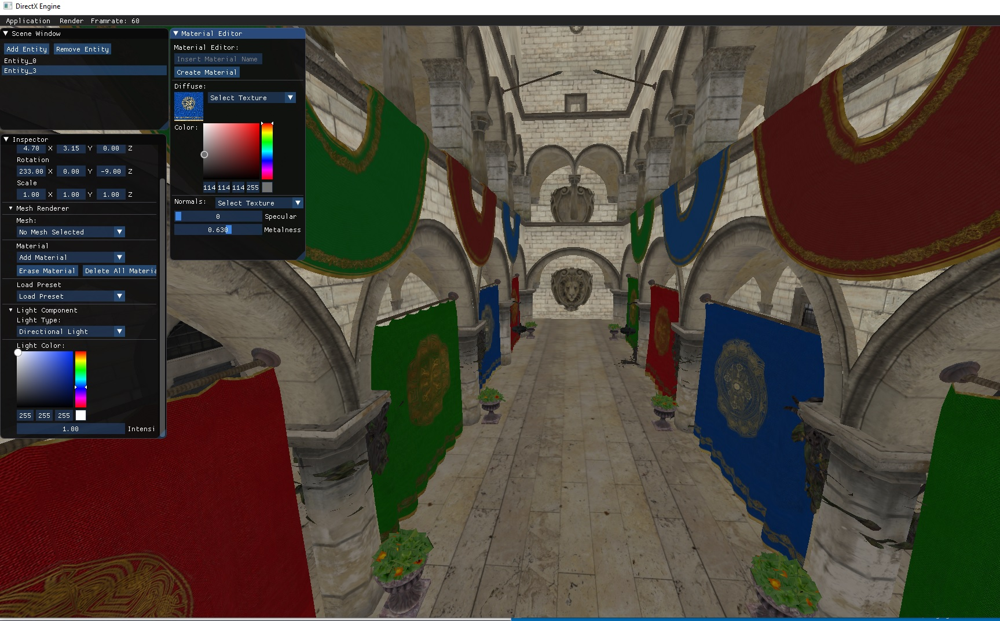 Albedo 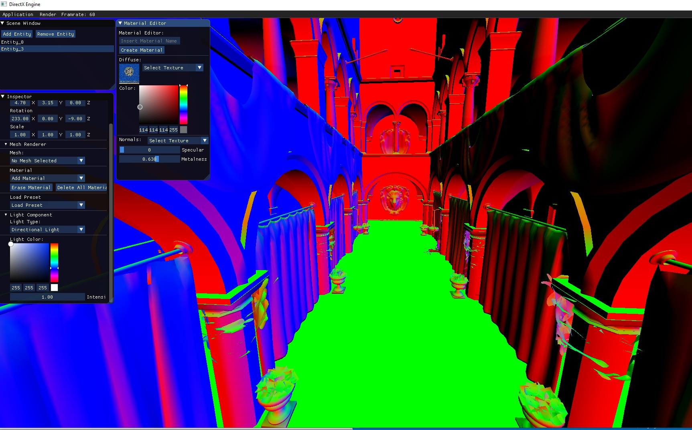 Normals 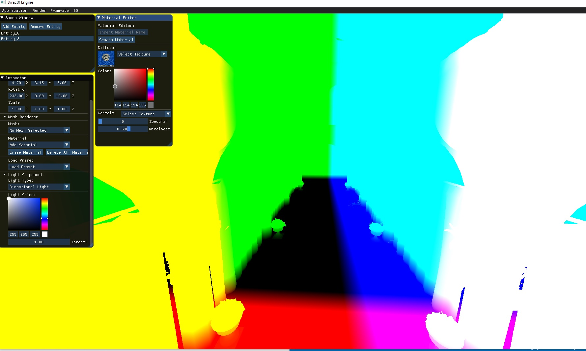 Position 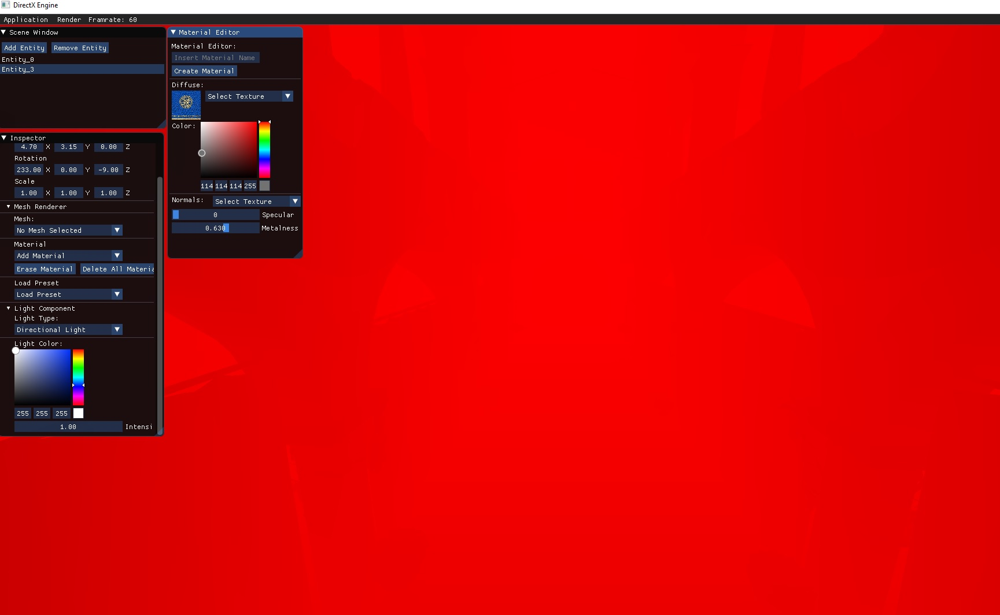 Depth
Github
Cute Engine
Cute Engine is a 3D Engine made with QT and OpenGL for a university subject. The purpose of this engine was to deepen in graphic programming and rendering tecnics and effects. This project has been developed by two students.
- Multi-pass Bloom
- Deferred Render Pipeline
- Directional Lights
- Grid Shader
- Assimp Mesh Loading
- Selected Entity Outline
Main Scene:
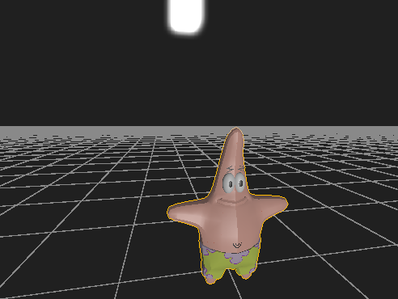
Bloom Effect:
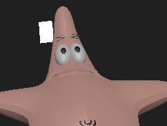 Bloom Not Active 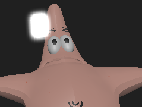 Bloom Active
Github
Games
ThatGoodParty
Is a 2D visual novel vertically scrolling video game about how drugs generates
dependence and change your environment made with Unity.
This game was born during Mini jam 2nd edition which theme was "self destruct" and the requeriments were to use NES palette and only 3 colors per sprite (we overlapped sprites if +3 colors were needed) After the game jam we decided to take the concept further and add more features to reach our main goal in the design.
My Role in this project:-
Gameplay Programmer:
- I programmed an acceleration based movement for the main character both for the horizontal walk and the vertical momentum.
-Also the stars give vertical momentum to the player. Thanks to the acceleration system it was an easy add on that makes the game more interesting to play. -
Pixel Artist:
- I made the main character animations and the background art using Aseprite.
-
Team Size:
- 2 members.

EmailItch.io
Unthrone
Is a 3D tile based dungeon crawler based on the Game of Thrones universe. Made as academic project with our own C++ Engine.
This game was the result of one of the most challenging subjects in the degree with
all the class working on the same project. We divided the team in smaller teams
each one working with members from diferent departments: art, programming and design
using agile methodologies.
And, if this was not enough, we developed the game with our custom game engine
made entirely in C++ and using C# as the scripting language.
-
AI Programmer:
At the beginning of the project I was the only programmer in the AI team because the engine was unestable and the AI was not prioritary. But still manage to create one simple enemy.
For the enemy correct behaviour I programmed:
- A linear velocity movement system to move the AI for the map.
- A simple perception system to detect and lose the player based in a spehere hearing system.
- The pathfinder which will calculate an A* path for the Enemy to chase the player.
- A rudimentary combat system with the enemy hitting the tile in front of him.
Later on, the AI Team was expanded and we removed this simple enemy to make a behaviour tree like system based in actions that we could put in any enemy to make it easier to create new enemies with different behaviours. At this point I programmed:
- The behaviour tree like system.
- Changed from linear velocity to an accelerated movement.
- More complex perception system using an observer pattern where events are triggered from different sources and sended to the listeners Althought it could be extended with more events we decide to stay only with hear and sight. For example when the player moves it triggers a hear event and if a entity is close enought it will react.
- The Investigate Action is one of the new Behaviour tree actions. When the enemy recieve a hear event it will go to investigate to the position where the event have been triggered and, after some time, it will return to his start position.
- Integrate all the enemies FXs
- Bug Fixing: At this time, we were 5 programmers at the AI scrum and for my last time there i didn't added any new feature, instead, I've had been working in fixing a lot of bugs both in the AI and the Engine. -
Graphic Programmer:
At the end of the project the Lead Programmer moved me to the graphic team with Miquel Izquierdo who was the main graphics programmer of the project. At these point of the project I made:
- A baked reflexion shader with Miquel using a cube map texture displayed in the boss floor. The result is not as good as it should when playing but to not affect the game performance this was the best option.
- More Bug Fixing. -
Team Size:
- 33 members.
Email Unthrone website
SouthWind Farm
Is a 3D Farm Management game where the player has to expand his farm buying fields, workers and animals to overcome the daily taxes and avoiding bankruptcy. Made with Unity.
This game was made for the AI subject of the degree and it is a minion like game where the player
interacts with the environment and the AI responds to it, like buying fields for the AI to work
or buying animals for the AI to take care of
-
Gameplay Programmer:
- A simple Camera Movement in the world axis when the mouse reach the limits of the screen like a moba
- All the accelerated Entities Steering Behaviours divided in different components which will affect the movement component resulting in the direction and speed of the entity.
- The Framers AI. Which consist in working the fields and harvesting everything to feed the animals.
- The Event System for field management. These uses a observer like pattern where the fields notify the farmers when they need to be harvested, planted or watered, and these tasks will be asigned to one free farmer.
- The buying system that allows the player to select where to put the fields in the game
-
UI Programmer:
- I programmed all the UI functionality which includes Scene management, Menus navigation, or Gameplay functionality like buying stuff
-
Pixel Artist:
- I made all the UI art and animations using Aseprite.
-
Team Size:
- 2 members.


Email SouthWind Farm website
A Link Between Ages
Is a "Legend of Zelda: a Link to the past" fan game based on fast paced combat with narrative elements entirely made with C++.
My Role in this project:
 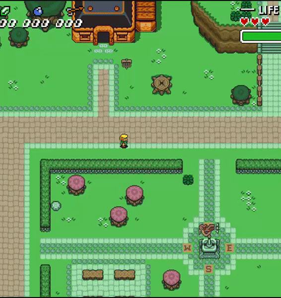
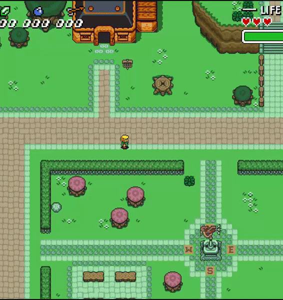
Github-
UI Programmer:
- I programmed all the UI functionality both in game and in Menus. Such as life display, stamina bar, menu navigation, item holded and number of rupees, bombs and arrows.
- Dialogs Text Display which includes line break the text when is near the end of the frame.
- I programmed bezier curves to make the main menu entering.
-
Generalist Programmer:
- As a generalist, I implemented a Cutscene system which could move the camera, the player, NPCs, UI elements, display texts and load/unload scenes. These system was a key element to the project due to the narrative needs of the game, allowing us to tell the story and using XML files to easyly create cutscenes.
- Also I programmed the gamepad controls.
-
Team Size:
- 7 members.
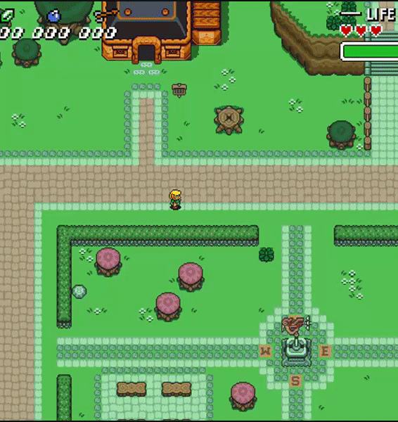
Email Link Between ages Website
Game Jams
Hungry Boi
Hungry Boi is a rythm / cooking game with the limitation of using a key for the controls, made with Unity.
-
Jam:
- Mini Jam 66
-
Gameplay Programmer:
- I programmed all the game/music syncronized system using coroutines
- The Spinning roulette rotation using Quaternions.
- The Animations an animators to sync the characters with the music.
- Everything but these are the most interesting. -
Ratings:
- 1# Presentation/Art.
- 4# Overall execution.
-
Team Size:
- 3 members.

Email Itch.io
mindense
Mindense is a ~2 min video game long of short stories about our different feelings during rough times made with Unity.

-
Jam:
- Bored Pixels Jam 7
-
Gameplay Programmer:
- I made the character movement using non linear velocity
- The waving ocean move.
- Also all the Game Logic.
-
Pixel Artist:
- I made the Island Sprites.
- All the character animations.
- The train and Station Art.
-
Ratings:
- 1# Visual Experience.
- 2# Creativity.
-
Team Size:
- 2 members.

Email Itch.io
Turnip On
Turnip On is a strategy/Pikmin like game exploring the Planting and Harvesting mechanic made with Unity.

-
Jam:
- Bored Pixels Jam 7
-
Gameplay Programmer:
- I made the character movement using non linear velocity
-
Pixel Artist:
- I made the Characters and NPCs Animations.
- Some elements of the Background.
-
Team Size:
- 3 members.
 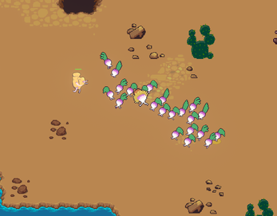
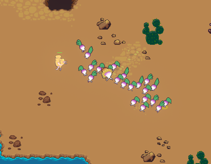
Email Itch.io
MIO
MIO is a farming / shooting game about intelectual property and piracy made with Unity.
-
Jam:
- AEVI Idea Game Jam
-
Gameplay Programmer:
- I made the Shooting both shotgun and pistol using raycasting
- Character Movement and mouse aiming
- Enemies Spawn and Spawner
-
Ratings:
- Top 10 over 50 projects.
-
Team Size:
- 5 members.
Turn it On!
Turn it On is a Puzzle game about energy transmission. The objective of the game is power all the crystals to get to the next puzzle. Made with Unity
-
Jam:
- Global Game Jam 2018
-
Gameplay Programmer:
- I made the Circle Ticky Logic
-
Team Size:
- 8 members.